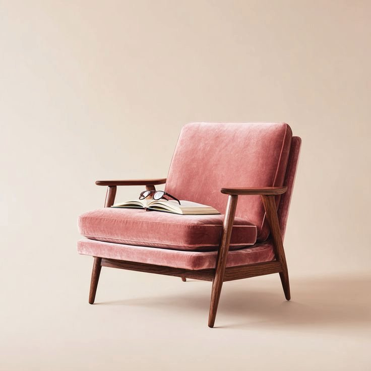
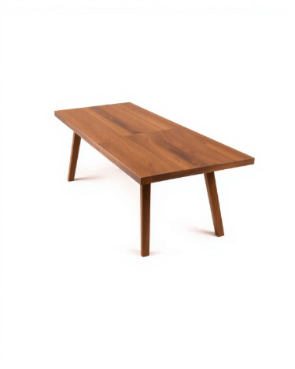
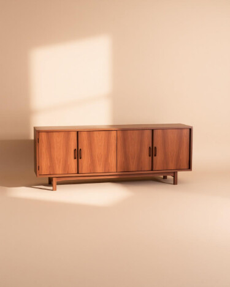
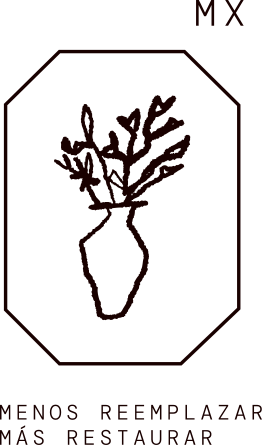

QUIÉNES SOMOS
ACHE restaura e interviene muebles de madera desde Guadalajara. Creemos en la transformación: encontramos valor en restaurar materiales nobles, restaurar con intención y devolverle sentido a aquello que merece seguir existiendo. ACHE nace de la convicción de que las cosas no deberían diseñarse para durar poco.
Porque un mueble no debería perder valor con los años; al contrario: cuando está bien hecho, el tiempo se convierte en parte de su historia.
VER CATÁLOGO
El método Ache
Reinterpretamos piezas valiosas desde una perspectiva atemporal, con una mirada contemporánea. Cada mueble pasa por las mismas manos y el mismo cuidado antes de llegar al catálogo.
VER VIDEO DEL TALLER
Buscamos piezas bien hechas, de madera maciza, que merecen seguir existiendo. Revisamos su estructura, sus uniones y su historia antes de traerlas al taller.

Desarmamos, limpiamos y reparamos cada pieza a mano. Recuperamos la madera, reforzamos sus uniones y la protegemos con acabados que dejan ver la veta.

Eliminamos ornamentos y tendencias vacías, y le damos a cada mueble una nueva forma de habitar el presente. Cuando está listo, le asignamos su número de pieza.
Dale una segunda vida a tu mueble
Compramos muebles de madera para restaurarlos. Escríbenos por WhatsApp, envíanos fotografías de tu pieza y te respondemos.
ESCRÍBENOS POR WHATSAPP
Lo que dicen nuestros clientes

Llegó tal como en las fotos y la coordinación de la entrega fue directa y puntual. Se nota el trabajo en cada detalle.
Buscábamos una mesa con historia y la encontramos. La madera quedó impecable.
Compré un par de sillas y volví por el sillón. Piezas únicas y muy bien restauradas.